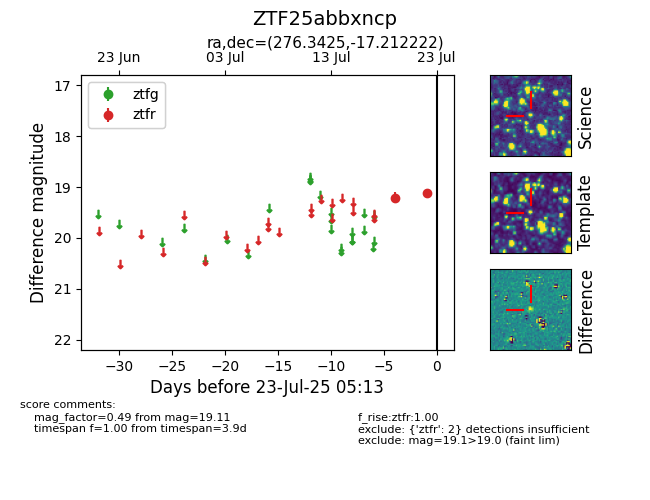

Target ZTF25abbxncp at 2025-07-23 12:37, see:
FINK: fink-portal.org/ZTF25abbxncp
Lasair: lasair-ztf.lsst.ac.uk/objects/ZTF25abbxncp
ALeRCE: alerce.online/object/ZTF25abbxncp
alt names
ZTF25abbxncp (ztf,fink)
coordinates:
equatorial (ra, dec) = (276.3425,-17.21222)
galactic (l, b) = (14.6903,-2.20318)
photometry
last ztfr=19.11
2 ztfr detections
